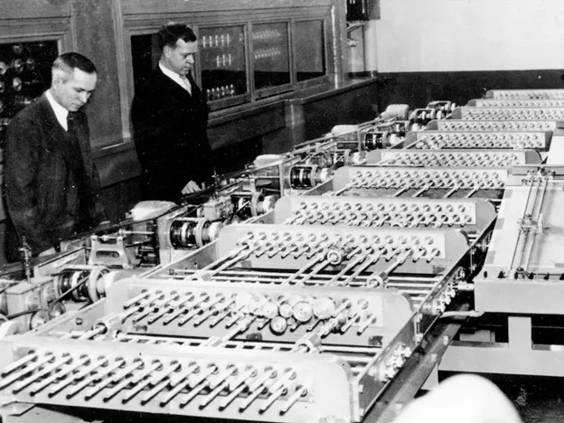
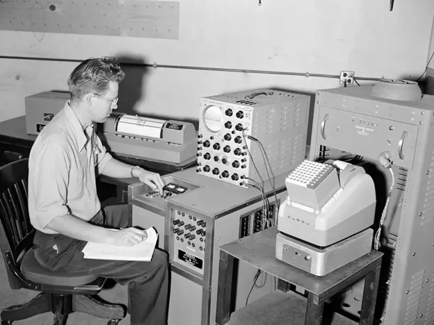
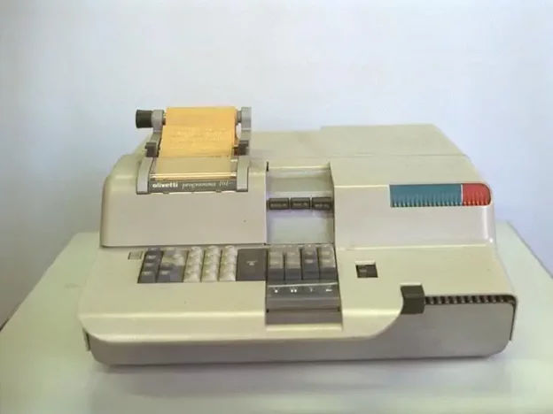
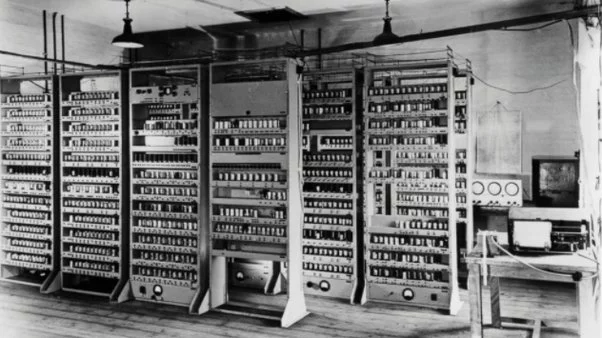
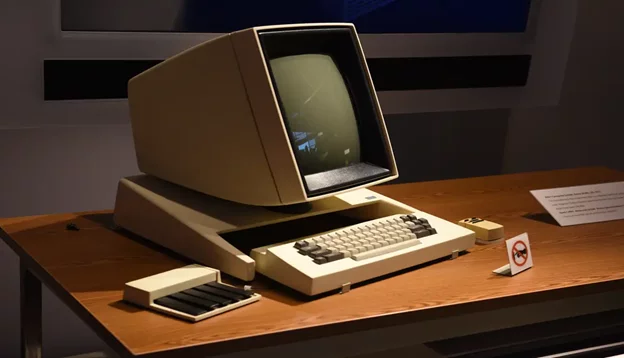
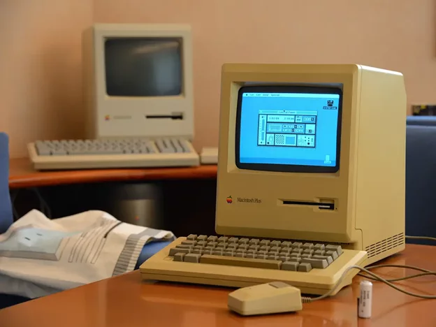
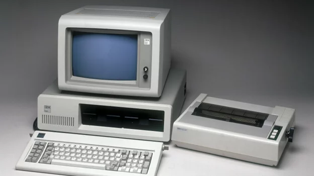
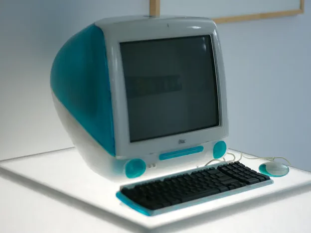
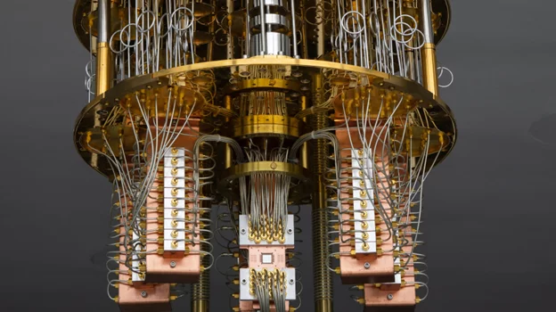
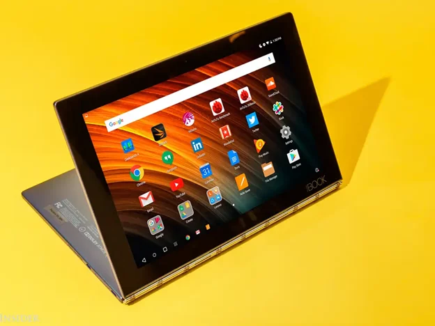

Evolution of Computers
We all know that computers work through an interaction of hardware and software. The whole transformation and advancement of the computer goes back decades. However, there are five apparent generations of computers. Each generation is defined by a paramount technological development that changed how computers operate. Let’s start discovering! First Generation – Vacuum Tubes (1940 – 1956) Did you know that the 1930s marked the beginning of calculating machines, considered the first programmable computers? Who knew that computers were this old? Konrad Zuse created what became known as the first programmable computer, the Z1, in 1936 in his parent’s living room in Berlin. You can see in the picture below just how gigantic the computer was.
The 1940s saw the emergence of electronic computers, including the ENIAC (Electronic Numerical Integrator and Computer) and the EDVAC (Electronic Discrete Variable Automatic Computer). These machines used vacuum tubes and punched cards for data processing. In the picture attached below, you can see a scientist using ENIAC for computational purposes.
These first-gen computers relied on ‘machine language’ (which is the most fundamental programming language that computers can understand). These computers were limited to solving one problem at a time. Input was predicated on punched cards and paper tape. Output emerged on printouts. Second Generation – Transistors (1956 – 1963) In 1947, the invention of the transistor by Bell Labs revolutionized computing. Transistors replaced bulky vacuum tubes, making computers smaller, faster, and more reliable. 101 Second-gen computers still count on punched cards for input/printouts. In the above image, you can see two computer engineers working on a computer transistor. The language emerged from a binary language to a symbolic (‘assembly’) language. This meant programmers could discover instructions in words. Until 1965, computers were only used by mathematicians and engineers in a lab setting. Programma 101 changed everything by offering the general public a desktop computer that anyone could use. The 65-pound machine was the size of a typewriter and had 37 keys and a printer built-in. Can you imagine yourself using this machine?
Some say that this invention solidified the idea of a personal computer!!! Third Generation – Integrated Circuits (1964 – 1971) Third-generation computers started using integrated circuits instead of transistors. Do not get overwhelmed by the new vocabulary! Just know that IC is a hardware component of a computer. Technically, the integrated circuit (IC) is a semiconductor material that contains thousands of transistors.
Because of IC, the computer becomes more reliable and fast, requires less maintenance, is small in size, is more affordable, and generates less heat. You can see in the image above how multiple IC racks are used to power a computer. The third generation computers significantly reduce the computational time. In the second generation, the computational time was microsecond, which was decreased to the nanosecond. In this generation, punch cards were replaced by mouse and keyboard
The Xerox Alto was created in the ’70s as a personal computer that could print documents and send emails. What was most notable about the computer was its design, which included a mouse, keyboard, and screen. Did you know that the picture of the Xerorx Alto attached above influenced Apple’s designs in the following decade? Fourth Generation – Microprocessors (1972 – 2010) Intel’s 4004 microprocessor marked a pivotal moment in computing history. It was the world’s first commercially available microprocessor and laid the groundwork for the personal computer revolution. Fun activity: Do you have an Intel processor inside your computer? If yes, then which version? When Steve Jobs introduced the first Macintosh computer in 1984, Consumer Reports called it a “dazzling display of technical wizardry.”
The release of the IBM Personal Computer, powered by Microsoft’s MS-DOS operating system, marked the beginning of the personal computer era. It set industry standards and paved the way for the advancements of PCs.
The iMac G3 was launched in 1998 and quickly became known for its Bondi blue, clear casing. The 38-pound iMac included USB ports, a keyboard, and a mouse. It was meant to be portable and customizable. In the picture below, you can see how cute the iMac G3 looked!!
Fun fact of the day: The iMac was the first time Apple used the “I” to name its products, explaining it stood for “internet,” “innovation,” and “individuality.” Honorable shout-outs to 2 other major technological advancements that improved the computer world: • World Wide Web (1991) Tim Berners-Lee’s invention of the World Wide Web revolutionized communication and information access. The web made the internet user-friendly and accessible to the masses. • Mobile Computing (2000s-Present) The advent of smartphones and tablets transformed computing into a complete mobile experience, with powerful handheld devices becoming integral to daily life. Fifth Generation – Artificial Intelligence (2010 Onwards) This is the computer generation that we use. We know that computer devices with artificial intelligence technology are still in development. Still, some of these technologies are emerging and being used, such as voice recognition or ChatGPT. AI is an authenticity made possible by adopting parallel processing and superconductors. In the future, computers will be revolutionized again by quantum computation, molecular, and nanotechnology.
In 2019, Google claimed to have achieved “quantum supremacy” by performing a calculation on its quantum computer that would take even the most advanced classical supercomputers thousands of years to complete. Today’s most innovative computers are tablets and iPads, which are simple touchscreens without a keyboard, mouse, or a separate CPU.
Today’s computer market is also filled with other computer models, including the MacBook Pro, iMac, Dell XPS, and iPhones. Which computer model do you have? Conclusion You have just witnessed the remarkable journey of the evolution of computers. From ancient counting devices to quantum computers, each era has built upon past innovations, reshaping how we live, work, and communicate. What have you learned from the history of computers? Is it the technological progress or human commitment to pushing the boundaries of what’s possible? Together, let’s continue to unlock the wonders of the computer universe and build a digital world brimming with innovation and excitement! Happy Learning!